When you hit the Create New List item in the dashboard screen, you will see a new screen with a section for each room and for the client's information
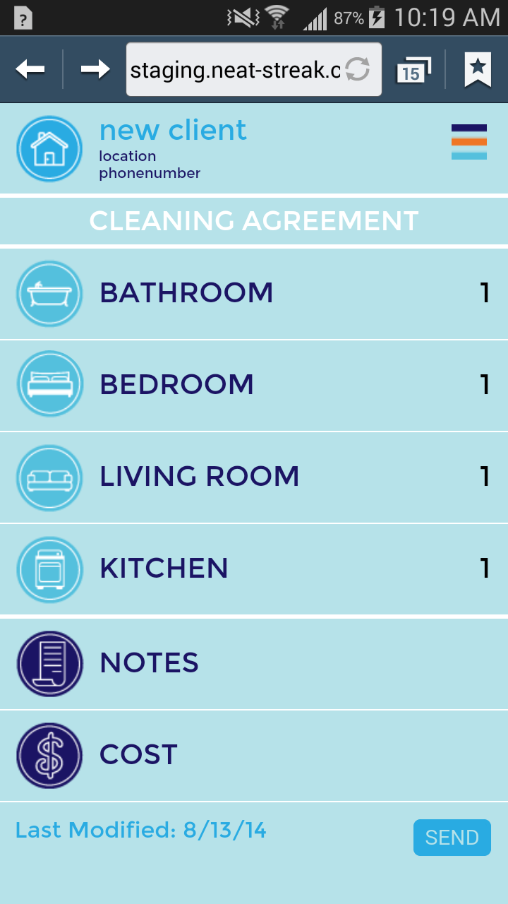
Hit the name of a room to open the default cleaning list for that room
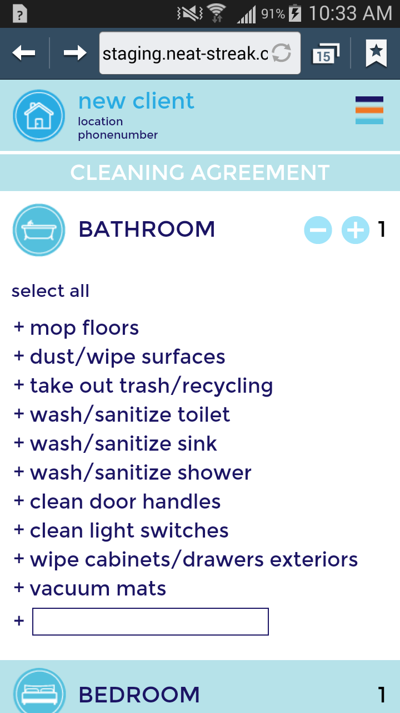
To select which tasks should be done, touch each item you want to include or touch "select all" to include all the items...
A selected item will become highlighted.
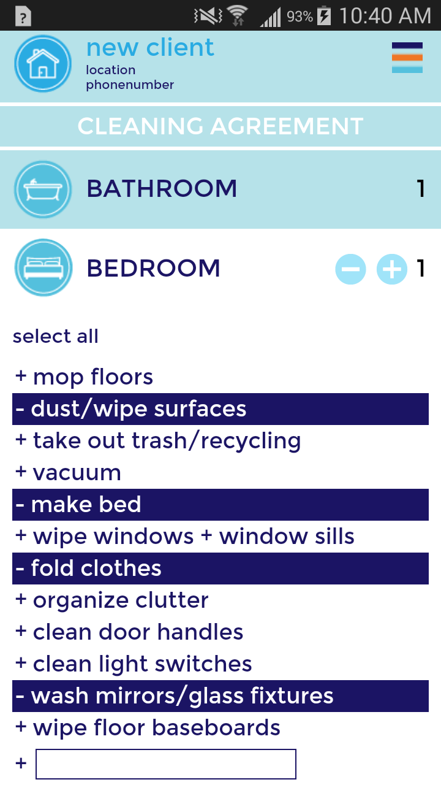
To add a new item not listed, go to the text box at the bottom of the list and type a description of the new task.
Then hit the Save button.
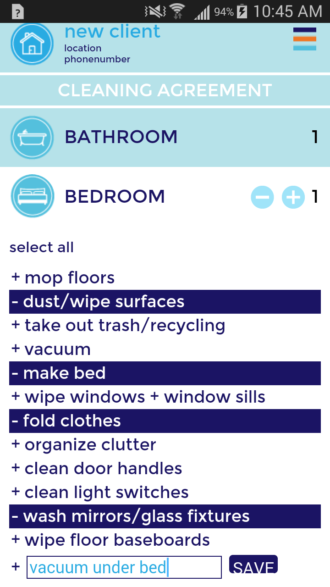
Continue on through each room that your client wants you to clean and select the relevant tasks.
Tap the "plus" sign to add another room
To add notes, touch "Notes" and type in your notes in the text box then hit the Save button.
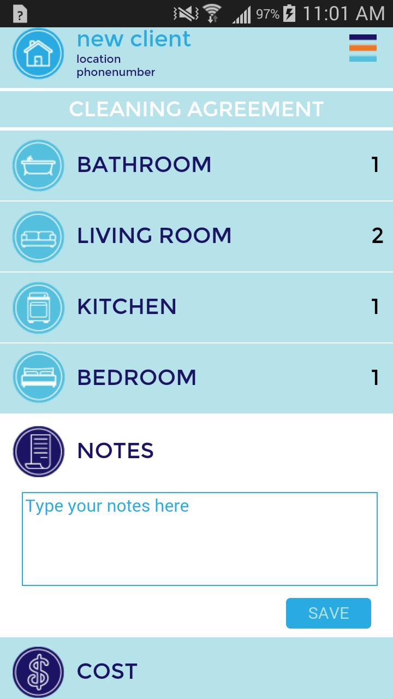
To enter your price, tap "Cost" and enter your price in the text box the hit the Save button.
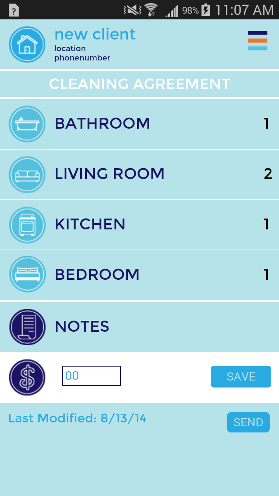
When all cleaning tasks have been selected, you can send the list to your client by tapping the "Send" button.
If you have not already filled in the client's contact information, you will be brought to the section where you can fill in that information so that the new list can be sent to the client in a text message.
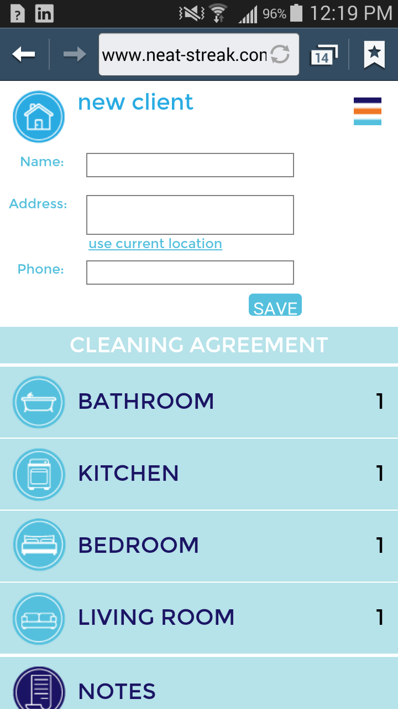
Fill in your client's name, phone number and address and hit the Save button.
Then return to the bottom of the screen and tap the "Send" button.
The button should change to "Sent!"
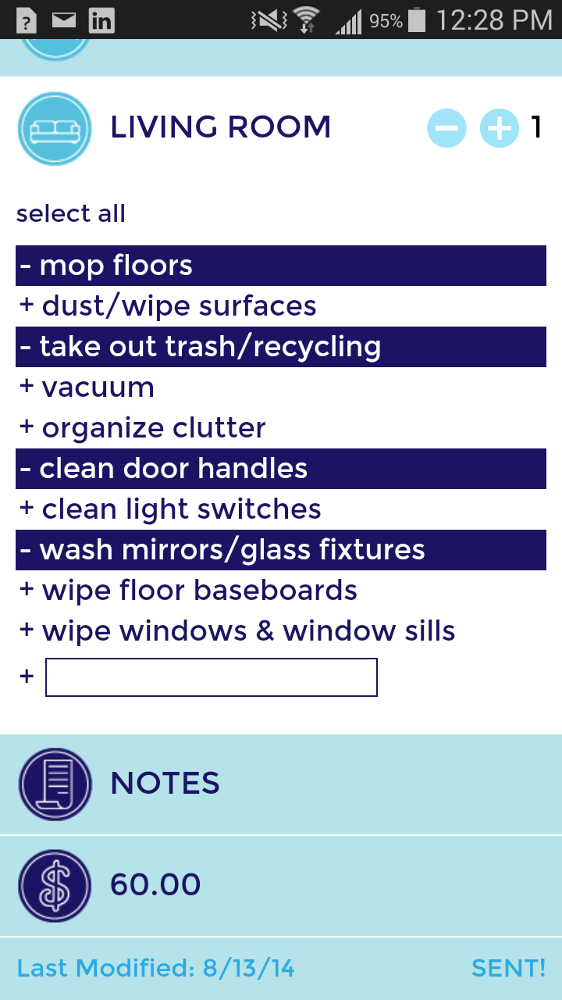
You can return to the dashboard where you can see your new list.
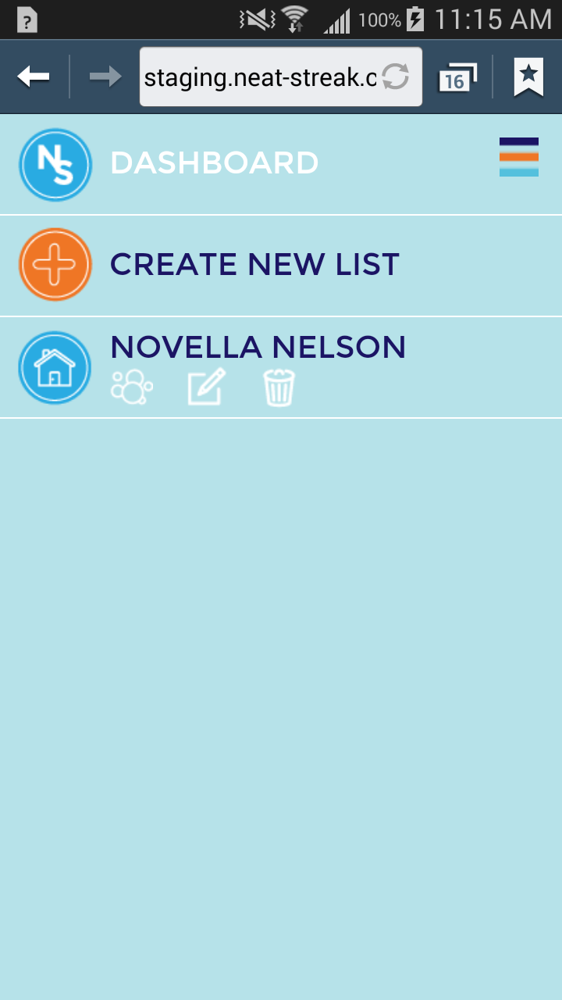
Once you have sent the list, your client should receive a text message like the following example with the agreed cleaning list
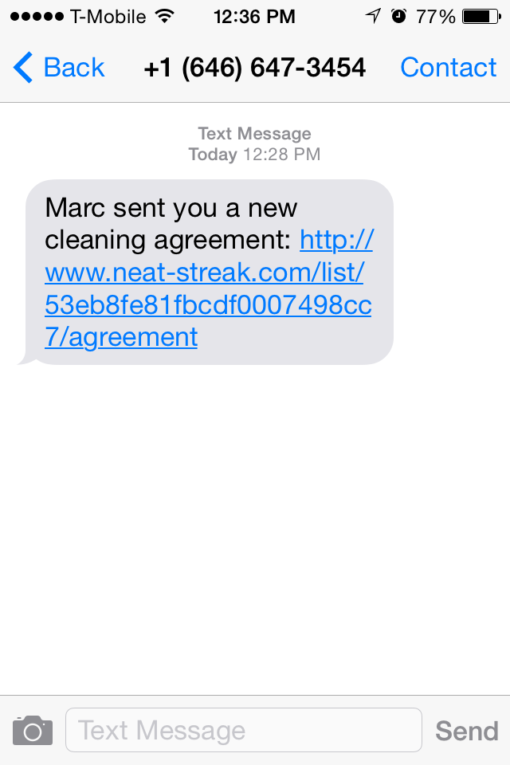
When your client clicks on the link, they should see the new list along with your name, phone number, note, and requested price if you provided any.
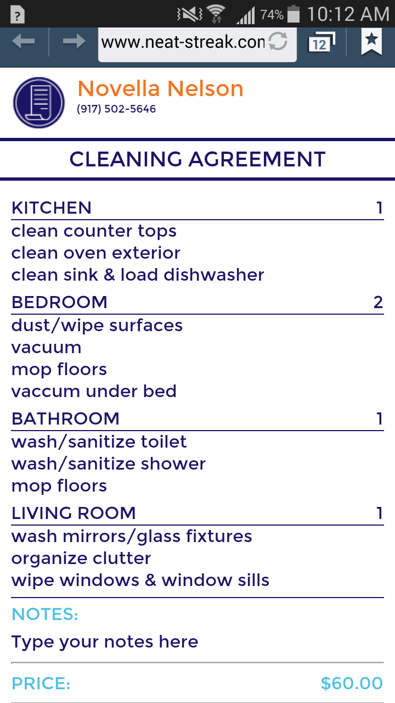